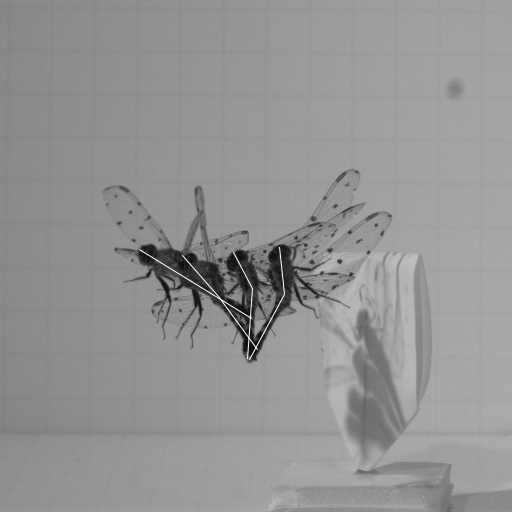

Airframe Morphing
An integrated experimental and computational approach was developed to study the effect of airframe morphing in dragonflies.

Airframe morphing observed in dragonfly flight during streotyped maneuvers (Bode-Oke et al, AIAA, 2015).

Airframe morphing observed in dragonfly flight during streotyped maneuvers (Bode-Oke et al, AIAA, 2015).

Airframe morphing control using B-Spline (A) and Optimization FlowChart (B)

How airframe morphing changes the instantaneous moment of inertia